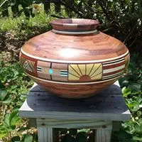

---
# Feel free to add content and custom Front Matter to this file.
# To modify the layout, see https://jekyllrb.com/docs/themes/#overriding-theme-defaults
layout: index
title: Home
---

Hello
Thank you for your interest in the Savannah River Woodturners Club
Who are we
Our membership is made up of local area people, young and mature, male and female, interested in the art of woodturning and finishing. We meet at least monthly to discuss, wood turning techniques, tool selection and application, selection of machinery and turning apparatuses. We also address wood selection for turning, types of finishes and the possible results.
Our Goals
The goals and benefits of our club are to:
- Make it easier for area woodworkers to share ideas and find common interests.
- Make it possible for the public in our local vicinity to find woodworkers for their projects.
- Promote products and services from our local woodworkers.
- Facilitate and promote the exchange of instruction among club membership and the public